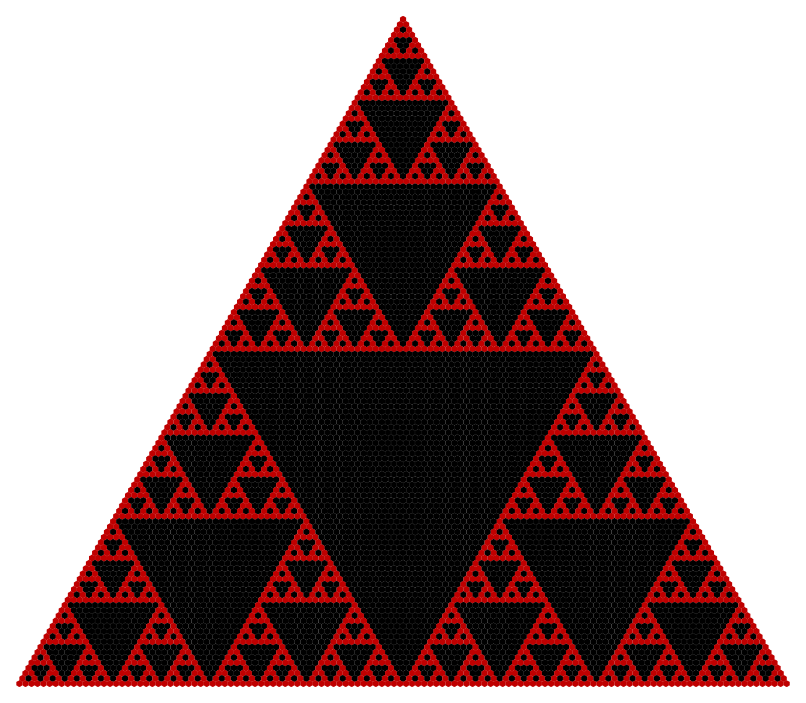
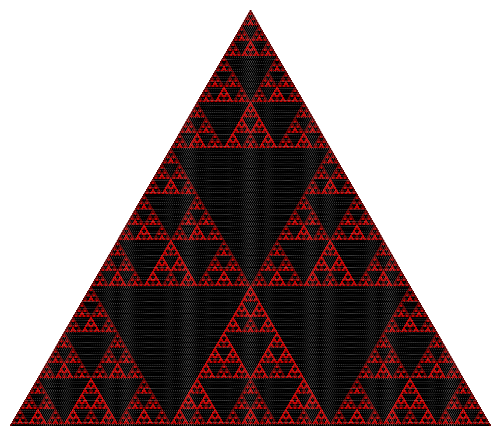
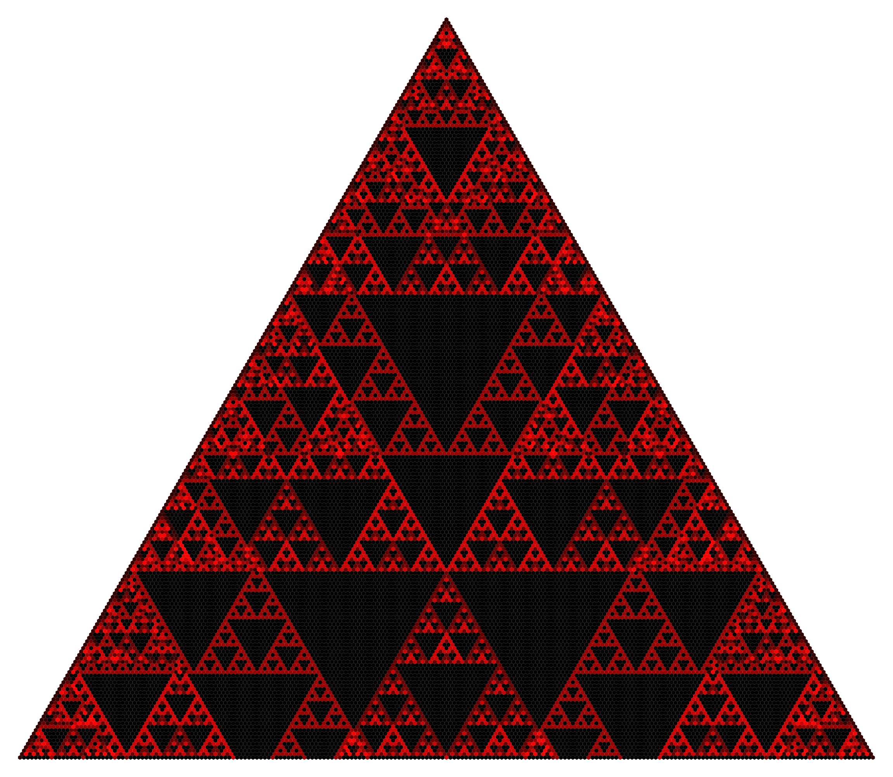
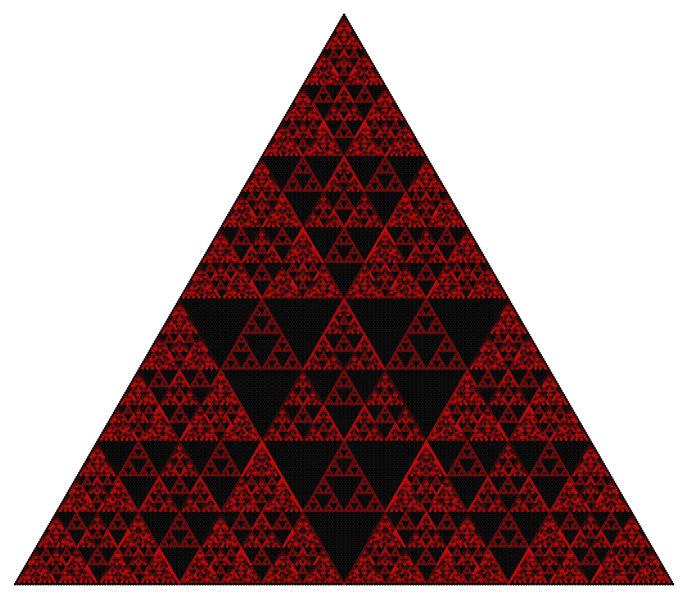
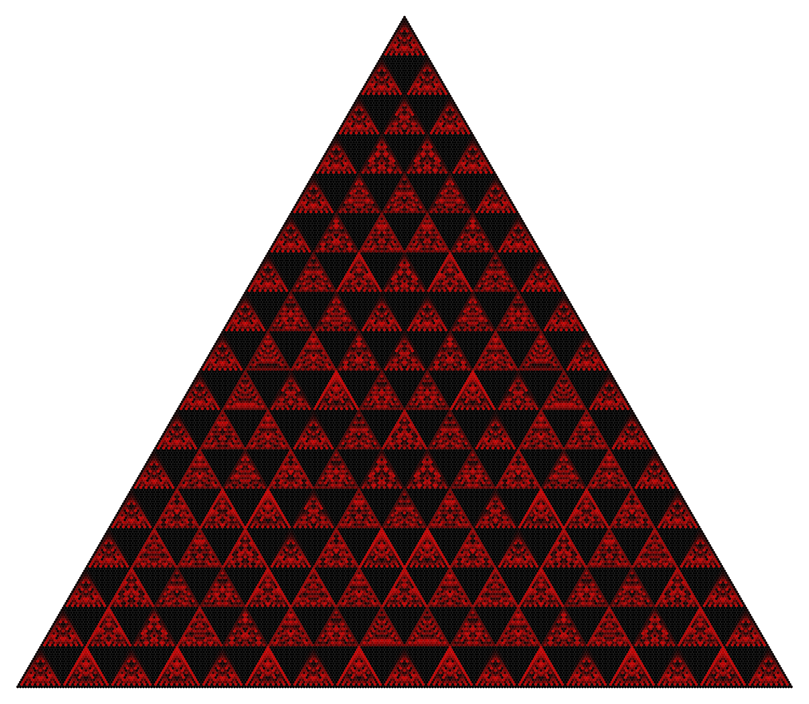

A well-known property of Pascal's triangle is that if you color each number by its residue mod 2, you get an approximation of the Sierpinski gasket (see below). But why stop at two?
These pictures were made in Mathematica with the following code (for various values of n and rows). Each number is colored by its residue mod n, where larger residues are brighter red.
Mod 2

Mod 3

Mod 6

Mod 8

Mod 17
